Giải pháp hệ thống
7. Quy trình xuất khác
Xuất khác (xuất mẫu, xuất hủy và các lý do khác): yêu cầu xuất khác tạo thủ công hoặc upload Excel, kho quét tem lấy hàng trên PDA, phiếu xuất khác duyệt trên Web thì trừ tồn theo tem và đồng bộ SAP.
7.1Yêu cầu xuất khác
Giao dịch kho › Xuất kho › tab Xuất khác
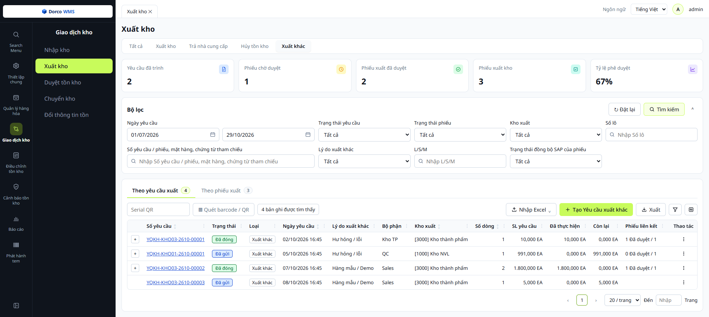
1 2 3 4 5 6 7 8 9- 1Thẻ tổng hợp: số yêu cầu đã gửi, phiếu chờ duyệt, phiếu đã duyệt, tổng số phiếu xuất và tỷ lệ phê duyệt trong khoảng lọc.
- 2Bộ lọc: ngày yêu cầu, kho xuất, lý do xuất khác, số lô, L/S/M, số yêu cầu / phiếu / mặt hàng / chứng từ tham chiếu, trạng thái đồng bộ SAP của phiếu.
- 3Tab Theo yêu cầu xuất / Theo phiếu xuất: cùng một màn hình. Tab Theo phiếu xuất là danh sách phiếu xuất khác (mục 7.3).
- 4Serial QR / Quét barcode / QR: quét QR in trên yêu cầu hoặc nhập số để lọc nhanh đúng yêu cầu.
- 5Nhập Excel: Tải Template hoặc Nhập từ Excel để tạo yêu cầu hàng loạt.
- 6+ Tạo Yêu cầu xuất khác: tạo yêu cầu thủ công trên WMS.
- 7SL yêu cầu / Đã thực hiện / Còn lại: tổng của yêu cầu; các dòng khác ĐVT thì hiện “Nhiều ĐVT”.
- 8Phiếu liên kết: số phiếu đã duyệt trên tổng số phiếu lập cho yêu cầu. Dấu + đầu dòng mở danh sách phiếu. Kéo ngang bảng để thấy cột Nguồn và Số yêu cầu (upload).
- 9Thao tác (⋮): Chi tiết, In, Tạo phiếu (khi yêu cầu còn số lượng chưa xuất).
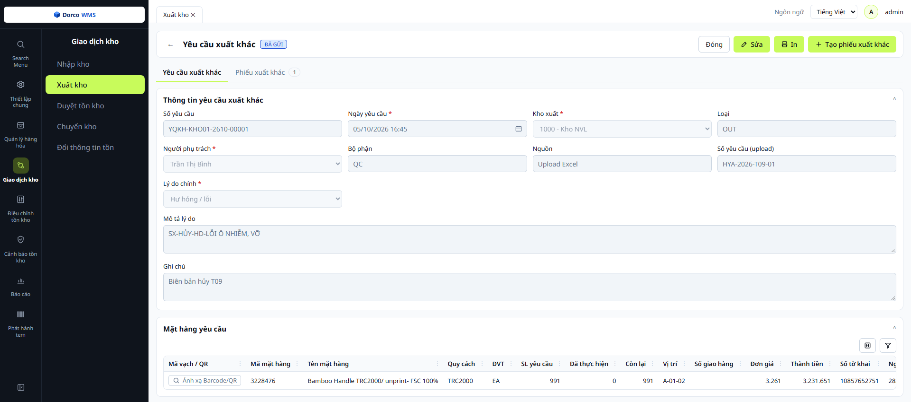
10 11 12 13 14 15 16- 10Nút thao tác: Sửa, In, + Tạo phiếu xuất khác (lập phiếu từ các dòng còn số lượng). Nút hiện tùy tình trạng của yêu cầu.
- 11Tab Yêu cầu xuất khác / Phiếu xuất khác: tab thứ hai liệt kê các phiếu đã lập cho yêu cầu, kèm trạng thái đồng bộ SAP và số đếm.
- 12Nguồn và Số yêu cầu (upload): Upload Excel hoặc Tạo thủ công; Số yêu cầu (upload) là số ghi trong file Excel.
- 13Lý do chính: quyết định các ô thông tin hiện thêm ở đầu yêu cầu và các cột của dòng mặt hàng.
- 14Mặt hàng yêu cầu: mã, tên, quy cách, ĐVT, vị trí, số giao hàng… Kéo ngang để xem hết cột.
- 15SL yêu cầu / Đã thực hiện / Còn lại của từng dòng.
- 16Cột theo lý do: Hư hỏng / lỗi có Đơn giá, Thành tiền, Số tờ khai, Ngày tờ khai, Nhà cung cấp, Checklist, Ngày sản xuất, Tình trạng, Số KG, Giá trị thu hồi; Hàng mẫu / Demo có Số KG, Số kiện, Xuất xứ.
7.2Quét tem xuất khác
Ứng dụng PDA › Xuất kho › Xuất kho khác
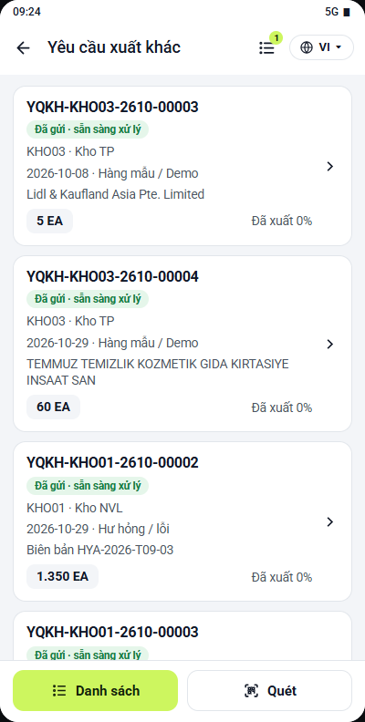
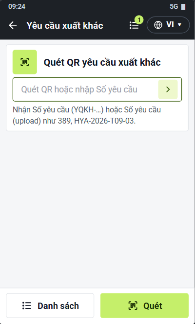
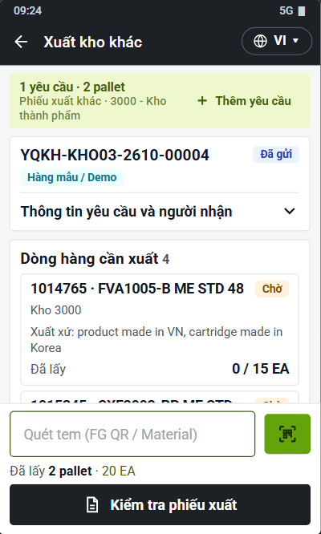
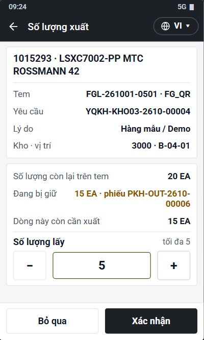
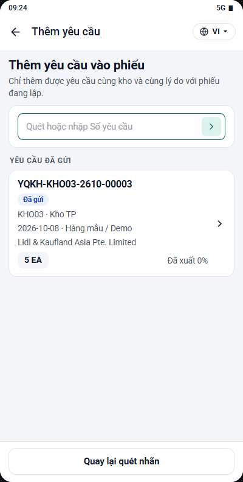
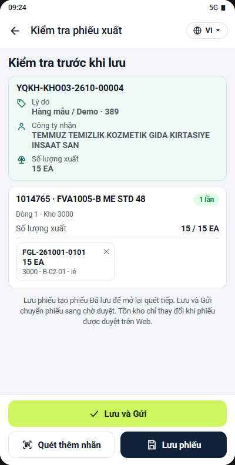
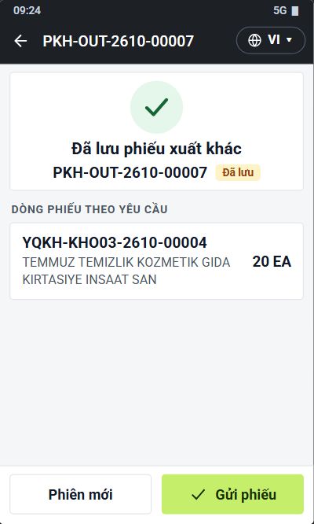
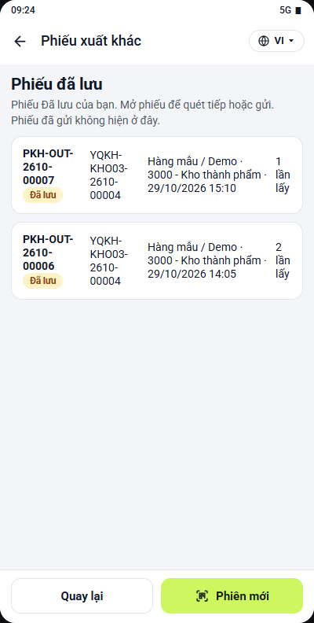
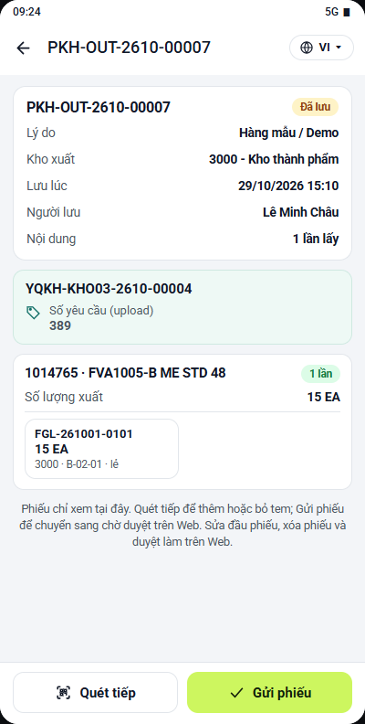
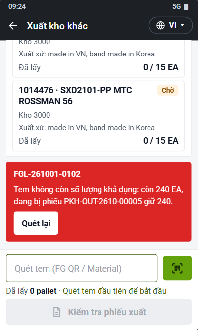
7.3Phiếu xuất khác
Giao dịch kho › Xuất kho › tab Xuất khác
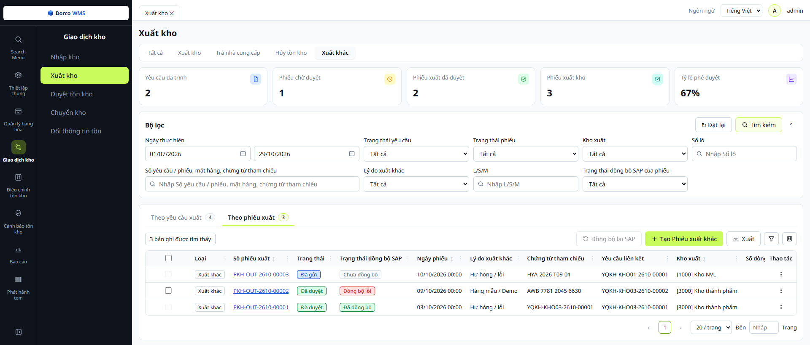
1 2 3 4 5 6 7 8- 1Lọc theo trạng thái đồng bộ SAP của phiếu trong bộ lọc chung.
- 2Tab Theo phiếu xuất: danh sách phiếu xuất khác, cùng màn hình với yêu cầu (7.1).
- 3Đồng bộ lại SAP: gửi lại nhiều phiếu một lần cho các phiếu đã chọn ở cột 5.
- 4+ Tạo Phiếu xuất khác: lập phiếu trên Web khi không quét bằng PDA.
- 5Ô chọn phiếu: chỉ chọn được phiếu Chưa đồng bộ hoặc Đồng bộ lỗi; phiếu khác ô mờ, rê chuột để xem lý do.
- 6Trạng thái đồng bộ SAP của từng phiếu.
- 7Chứng từ tham chiếu / Yêu cầu liên kết: số vận đơn, biên bản… và các yêu cầu mà phiếu lấy dòng.
- 8Thao tác (⋮): Chi tiết, In, Đồng bộ lại SAP, Hủy phiếu… Nút hiện tùy theo tình trạng của phiếu.
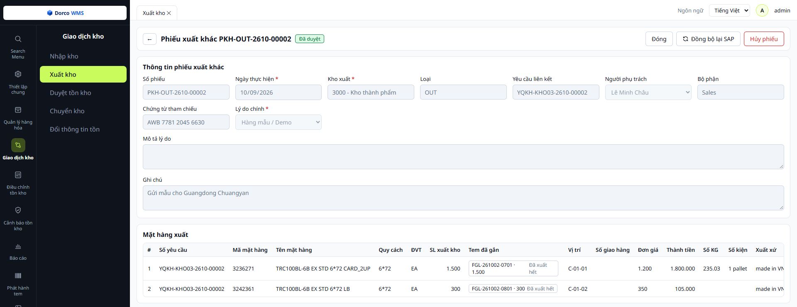
9 10 11 12 13- 9Nút thao tác: Lưu, Gửi, Duyệt, Đồng bộ lại SAP, Hủy phiếu… tùy tình trạng của phiếu.
- 10Thông tin phiếu: Số phiếu, Ngày thực hiện, Kho xuất, Yêu cầu liên kết, Người phụ trách, Bộ phận, Chứng từ tham chiếu, Lý do chính, Mô tả lý do, Ghi chú.
- 11Tem đã gắn: các tem của dòng và số lượng lấy từ mỗi tem.
- 12Vị trí: lấy theo vị trí của tem.
- 13Đơn giá / Thành tiền: Thành tiền = SL xuất × Đơn giá. Kéo ngang để xem các cột theo lý do và người nhận (hàng mẫu).